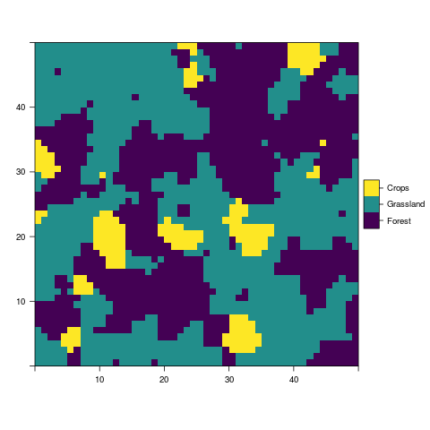

NLMR is an R package for simulating neutral landscape models (NLM). Designed to be a generic framework like NLMpy, it leverages the ability to simulate the most common NLM that are described in the ecological literature. NLMR builds on the advantages of the raster package and returns all simulation as RasterLayer objects, thus ensuring a direct compability to common GIS tasks and a flexible and simple usage. Furthermore, it simulates NLMs within a self-contained, reproducible framework.
Installation
Install the release version from CRAN:
install.packages("NLMR")NOTE: The version on CRAN is pre-rOpenSci review, so it still contains the utility functions you find now in landscapetools.
To install the developmental version of NLMR, use the following R code:
# install.packages("devtools")
devtools::install_github("ropensci/NLMR", ref = "develop")Example
Each neutral landscape models is simulated with a single function (all starting with nlm_) in NLMR, e.g.:
random_cluster <- NLMR::nlm_randomcluster(nrow = 100,
ncol = 100,
p = 0.5,
ai = c(0.3, 0.6, 0.1),
rescale = FALSE)
random_curdling <- NLMR::nlm_curds(curds = c(0.5, 0.3, 0.6),
recursion_steps = c(32, 6, 2))
midpoint_displacememt <- NLMR::nlm_mpd(ncol = 100,
nrow = 100,
roughness = 0.61)
Overview
NLMR supplies 14 NLM algorithms, with several options to simulate derivates of them. The algorithms differ from each other in spatial auto-correlation, from no auto-correlation (random NLM) to a constant gradient (planar gradients):
| Function | Description | Reference |
|---|---|---|
| nlm_curds | Simulates a curdled neutral landscape model. Random curdling recursively subdivides the plane into blocks. At each level of the recursion, a fraction of the this block is declared as habitat while the remaining stays matrix. When option q is set, it simulates a wheyed curdling model, where previously selected cells that were declared matrix during recursion, can now contain a proportion of habitat cells. |
Keitt (2000); Travis and Dytham (2004), Gustafson and Parker (1992) |
| nlm_distancegradient | Simulates a distance gradient neutral landscape model. The function takes the number of columns and rows as input and creates a RasterLayer with the same extent. Origin is a numeric vector of xmin, xmax, ymin, ymax for a rectangle inside the raster from which the distance is measured. | Etherington, Holland, and O’Sullivan (2015) |
| nlm_edgegradient | Simulates a linear gradient orientated on a specified or random direction that has a central peak, which runs perpendicular to the gradient direction. | Travis and Dytham (2004) |
| nlm_fbm | Simulates neutral landscapes are generated using fractional Brownian motion, an extension of Brownian motion in which the amount of correlation between steps is controlled by the Hurst coefficient H. | Schlather et al. (2015) |
| nlm_gaussianfield | Simulates a spatially correlated random fields (Gaussian random fields) model, where one can control the distance and magnitude of spatial autocorrelatian. | Schlather et al. (2015) |
| nlm_mosaicfield | Simulates a mosaic random field neutral landscape model. | Schlather et al. (2015) |
| nlm_mpd | Simulates a midpoint displacement neutral landscape model where the parameter roughness controls the level of spatial autocorrelatian. | Peitgen and Saupe (1988) |
| nlm_neigh | Simulates a neutral landscape model with categories and clustering based on neighborhood characteristic. | Scherer et al. (2016) |
| nlm_percolation | Simulates a binary neutral landscape model based on percolation theory. The probality for a cell to be assigned a 1 is drawn from a uniform distribution. | Gardner et al. (1989) |
| nlm_planargradient | Simulates a planar gradient neutral landscape model with gradient sloping in a specified or random direction. | Palmer (1992) |
| nlm_polylands | Simulates patchy mosaic neutral landscape models built on the basis of spatial point pattern processes such as the Strauss process. | Gaucherel (2008) |
| nlm_random | Simulates a spatially random neutral landscape model with values drawn a uniform distribution. | |
| nlm_randomcluster | Simulates a spatially random neutral landscape model with values drawn a uniform distribution. | Saura and Martínez-Millán (2000) |
| nlm_randomrectangularcluster | Simulates a random rectangular cluster neutral landscape model where rectangular clusters are randomly distributed until the raster is filled. | Gustafson and Parker (1992) |

See also
NLMR was split during its development process - to have a minimal dependency version for simulating neutral landscape models and an utility toolbox to facilate workflows with raster data. If you are interested in merging, visualizing or further handling neutral landscape models have a look at the landscapetools package.
Meta
- Please report any issues or bugs.
- License: GPL3
- Get citation information for
NLMRin R doingcitation(package = 'NLMR')- Additionally, we keep a record of publications that use
NLMR. Hence, if you usedNLMRplease file an issue on GitHub so we can add it to the list.
- Additionally, we keep a record of publications that use
- We are very open to contributions - if you are interested check out our Contributor Guidelines.
- Please note that this project is released with a Contributor Code of Conduct. By participating in this project you agree to abide by its terms.

References
Etherington, Thomas R., E. Penelope Holland, and David O’Sullivan. 2015. “NLMpy: A Python Software Package for the Creation of Neutral Landscape Models Within a General Numerical Framework.” Methods in Ecology and Evolution 6 (2): 164–68.
Gardner, R H, R V O’Neill, M G Turner, and V H Dale. 1989. “Quantifying Scale-Dependent Effects of Animal Movement with Simple Percolation Models.” Landsc. Ecol. 3 (3/4): 217–27.
Gaucherel, C. 2008. “Neutral Models for Polygonal Landscapes with Linear Networks.” Ecol. Modell. 219 (1-2): 39–48.
Gustafson, Eric J, and George R Parker. 1992. “Relationships Between Landcover Proportion and Indices of Landscape Spatial Pattern.” Landsc. Ecol. 7: 101–10.
Keitt, Timothy H. 2000. “Spectral Representation of Neutral Landscapes.” Landsc. Ecol. 15: 479–93.
Palmer, Michael W. 1992. “The Coexistence of Species in Fractal Landscapes.” Am. Nat. 139 (2): 375.
Peitgen, Heinz-Otto, and Dietmar Saupe, eds. 1988. The Science of Fractal Images. New York, NY, USA: Springer New York, Inc.
Saura, Santiago, and Javier Martínez-Millán. 2000. “Landscape Patterns Simulation with a Modified Random Clusters Method.” Landsc. Ecol. 15 (7): 661–78.
Scherer, Cédric, Florian Jeltsch, Volker Grimm, and Niels Blaum. 2016. “Merging Trait-Based and Individual-Based Modelling: An Animal Functional Type Approach to Explore the Responses of Birds to Climatic and Land Use Changes in Semi-Arid African Savannas.” Ecol. Modell. 326: 75–89.
Schlather, Martin, Alexander Malinowski, Peter J Menck, Marco Oesting, Kirstin Strokorb, and Others. 2015. “Analysis, Simulation and Prediction of Multivariate Random Fields with Package RandomFields.” J. Stat. Softw. 63: 1–25.
Travis, J M J, and C Dytham. 2004. “A Method for Simulating Patterns of Habitat Availability at Static and Dynamic Range Margins.” Oikos 104 410–16.